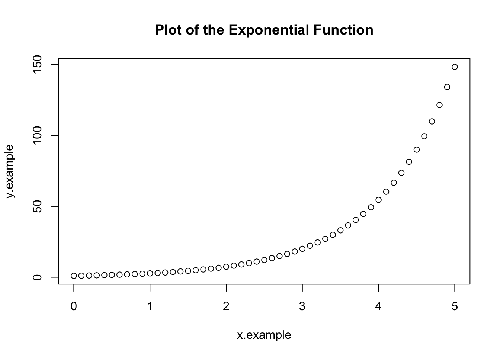
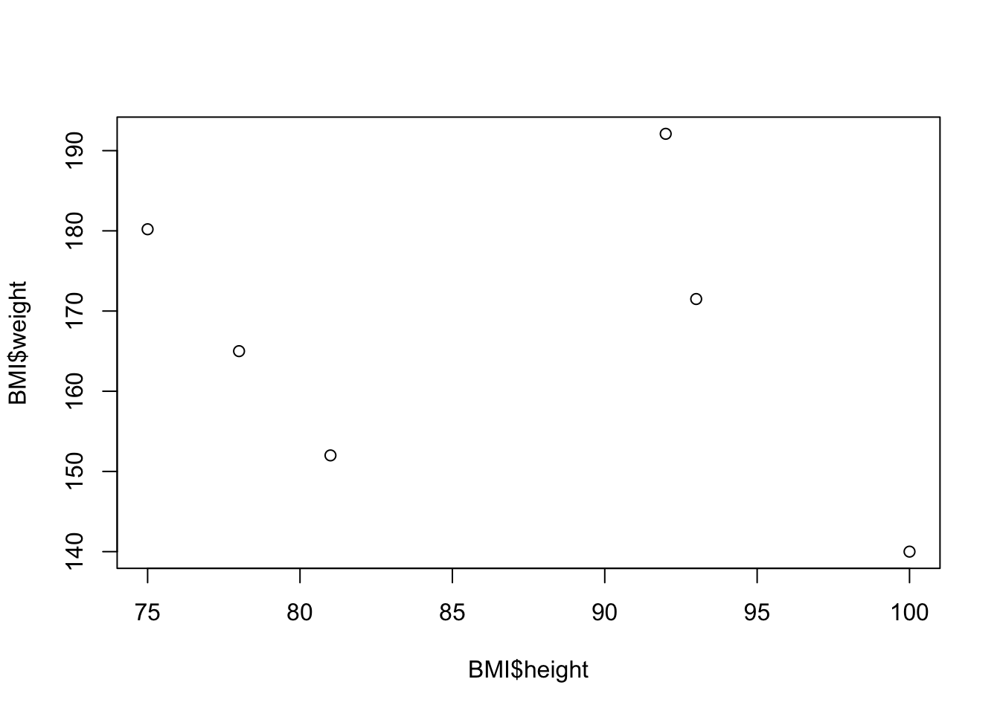
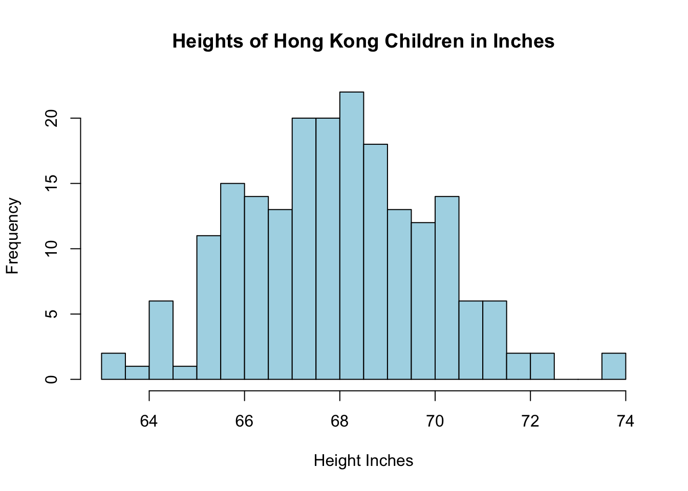
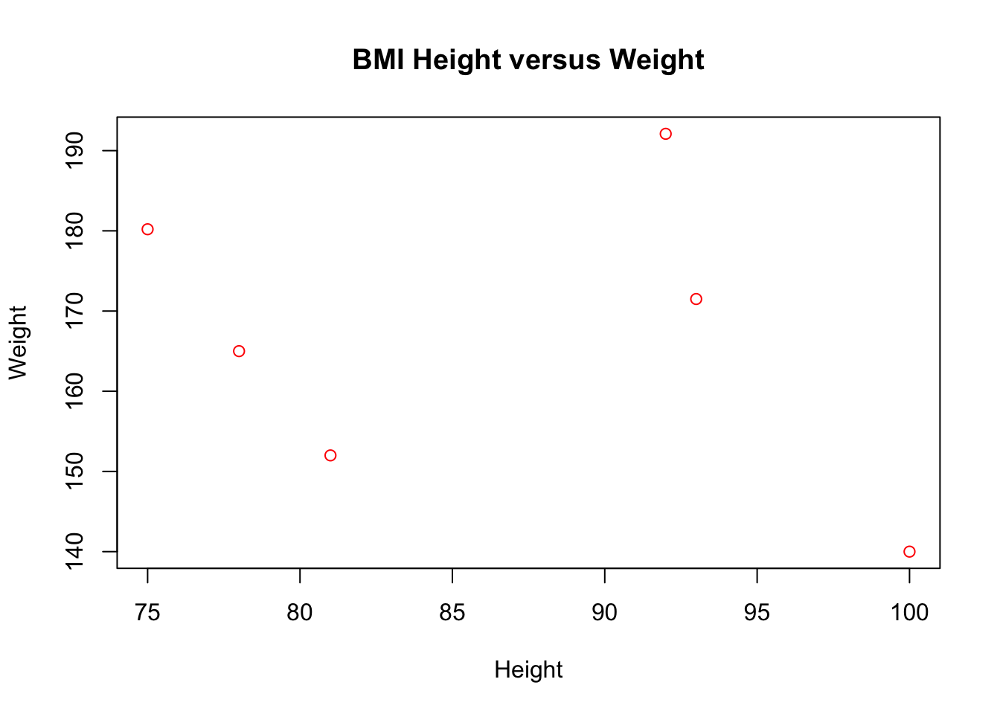

Chapter 2 Introduction to R
2.1 What is R?
R is a language and environment for statistical computing and graphics. R provides a wide variety of statistical and graphical techniques, and is highly extensible. Basically, anything you could ever want to do using statistics has already been done in R.
Better yet R is completely free to use and download. Unfortunately, R has a bit of a learning curve to get comfortable using it. We will only be using a little bit of the whole power of R in our class, and I will introduce all the commands you will need as we come to them. You are authorized to use R for any homework questions and it will be available to you for any class requirements. R is the principle tool for completing the projects for the class.
As a little motivation the average salary of those who write computer code in R is over $100,000 a year. So learning a little bit of R may make you rich someday. It will also give you a leg-up over any future job market competitors, as knowledge of R is highly desirable by employers.
RStudio provides a nice interface to the power of R, and I will be using RStudio exclusively in this class. It is also free for personnel use.
2.2 R Packages
The true power of R lies in the harnessing of the work of millions of nerds across the globe who use R and write up useful packages which add new features to R. There are thousands of R packages which can be installed to add features to R, we will only be using a few of these in the class.
In particular, your instructor is a nerd who has created his own R package specifically for this class. You will be using this package almost every time we use R in this class. I will expect that you have loaded R Studio and have run the command library(HannayIntroStats) when giving directions in class, on tests, etc. Make sure you have installed my package and load it anytime you are working in this class.
To install the class R package you will need to run the following commands:
install.packages("devtools") #get the package installing package
devtools::install_bitbucket(repo="khannay/hannayintrostats.git") #install the class R packageYou will only need to run these install commands one time. From now on you can start your R session by giving the command:
library(HannayIntroStats)2.3 R as a Fancy Calculator
2.3.0.1 Basic Operations
The console in R can be used like a very powerful calculator:
2+3 ##add two numbers## [1] 52-3 ##subtract two numbers## [1] -12*3 ##multiply two numbers## [1] 62/3 ##divide two numbers## [1] 0.66666672^3 ## raise 2 to the third power## [1] 8R also has many functions which we can use just like on a calculator. For example we can use the trigonometric function \(\sin(x)\):
sin(10.0)## [1] -0.5440211Or we could use the exponential function \(y=e^x\) easily using:
exp(2.0)## [1] 7.389056You can always look up what a function does using:
?expwhich will bring up the details of what that function does in RStudio. You can also search for a function using the RStudio help menu.
R has many functions which aren’t typically on a calculator. For example, I will use the print() function a bunch in these notes. This just prints a variable to the screen.
2.3.0.2 Variables in R
You won’t use the R command line very long before you want to save the value of a computation. This is easy to do in R:
x=2
y=x+2
print(y)## [1] 4The first line says define the value of x as 2, the second line define y as the value of x+2=(2)+2=4. One note is we come back later and change the value of x, the value of y won’t change automatically. You need to run the y=x+2 line again to update y if you change x.
x=2
y=x+2
print(y)## [1] 4x=3;
print(y)## [1] 4As a note you can use either the equals sign x=2 to assign a variable a value, or you can use the “arrow” way x<-2. I will generally use the arrow method, as I think arrows are cool. You are welcome to use either notation.
x<-2;
y<-x+2
print(y)## [1] 4Within Rstudio you can always see what variables are defined during your current session in the upper right panel under the environment tab.
Exercise 2.1 Open RStudio and use R as a calculator to find the value of 2^3+exp(3)/10 in the console.
2.4 More Advanced R
2.4.1 Data Types in R
R stores the variables as one of a few different types,
| Data Type | Example |
|---|---|
| logical | TRUE/FALSE |
| numeric | 1.23, 2.3 decimal numbers |
| integer | 0,1,-1,2,-2, etc |
| character | ‘abc’, ‘Hannay’, etc |
| factor | A categorical variable which takes on a small number of values |
and a few types we should never need to use. Note that for the character types I use quotes around them, this tells R to consider that as a character and not a variable name. You can use either single or double quotes as long as they match. The data type shouldn’t matter much as R typically picks the correct type for our variables automatically. If you are curious you can check what type a variable is using the class() command:
last.name<- "Hannay"
class(last.name)## [1] "character"age <- 22
class(age)## [1] "numeric"If you want to change the type of a variable you can use the as.numeric, as.character, as.integer, etc functions. For example, if we want to store age as a integer instead as a numeric type we could use:
age.int <- as.integer(age)
class(age.int)## [1] "integer"2.5 Logic in R
The logical types are returned when we ask the computer true/false questions like:
old<- age.int > 30;
print(old)## [1] FALSEThe answer to whether the integer called age.int is greater than 30 is FALSE.
class(old)## [1] "logical"We can see that R stores the answers to our true/false questions using the logical type. The most basic logical operations we can do are comparisons. To put these into R we need the following notations.
What is we want to ask R more complicated logical questions for example how can we ask whether a number \(a\) is between 1 and 2. Mathematically this would look like: \[ 1 < a < 2.\] The key is to notice this is really just two of our questions from before stacked together. We want to know if \(a>1\) AND if \(a<2\).
To ask this question in R we can use the && operator.
a=2.8
(a>1) && (a<2)## [1] FALSEa=1.6
(a>1) && (a<2)## [1] TRUEWe may also want to ask the logical questions which involve using OR. For example, we can ask whether a character equals apples OR oranges.
We denote an OR question in R using the notation ||. This one doesn’t make as much sense as the && for and but this is the standard notation for computer scientists.
a='apples'
(a=='apples') || (a=='oranges')## [1] TRUEa='grapes'
(a=='apples') || (a=='oranges')## [1] FALSEWe may also reverse the answer to a logical question using the NOT operator !. This just reverses our answer TRUE becomes FALSE and FALSE becomes TRUE.
a='grapes'
!((a=='apples') || (a=='oranges'))## [1] TRUE| Logical Comparison Operation | R notation |
|---|---|
| Equality | == |
| Greater than | > |
| Greater than or equal to | >= |
| Less than | < |
| Less than or equal to | <= |
| AND | && |
| OR | || |
| NOT | ! |
| NOT EQUAL | != |
You might rightly ask can we really do everything we will want to do with these relatively simple logic operations? Pretty much, as long as we learn to ask the questions in the right way. Perhaps I am biased but my field of mathematics is basically just a bunch of these logical operations chained together in new and interesting ways. Also these logical operations underlie the mechanics of computers used for everything from guiding missles to posting pictures of cats on instagram.
2.6 Storing Data in R
2.6.1 Vectors
Statistics involves analyzing large collections of data, so individually naming each variables would be a huge waste of time. We need a way to store a collection of related data and give them a single name. For this we have vectors in R.
x<-c(1,2,3)The c here is a function which concatenates the collection of numbers 1,2,3 into a single vector. If we do operations on vectors they act on each entry individually.
x+1 ##add one to each number in x## [1] 2 3 4x^2 ##square each number in x## [1] 1 4 9x>2 ## for each number in x, ask the question is x greater than 2? ## [1] FALSE FALSE TRUEIf we want to access the entries of x individually we can use brackets x[1] to get that entry individually. For example the first entry of x can be accessed using:
x[1]## [1] 1The third entry:
x[3]## [1] 3If we try to access the an entry in a vector which isn’t there we get NA back,
x[4]## [1] NAwhich stands for Not Available. To avoid this we can always find the length of a vector (number of entries) using:
length(x)## [1] 3We can also add all the values in a vector using the sum command,
sum(x)## [1] 6Besides creating vectors using the c function and manually typing them in R provides many other ways to create vectors.
For example the seq function, short for sequence, can be used to get a vector with a sequence of values separated by an increment:
seq(0,10,1) ##created a vector with values going from 0 to 10 by 1## [1] 0 1 2 3 4 5 6 7 8 9 10as another example
seq(0,1,0.1)## [1] 0.0 0.1 0.2 0.3 0.4 0.5 0.6 0.7 0.8 0.9 1.0The seq command can be useful if we want to apply a function to a vector of evenly spaced values, e.g.
x.example<-seq(0,5,0.1) ##values from 0 to 5 every 0.1
y.example<-exp(x.example) ## the exponential of each value in the x vector
print(y.example)## [1] 1.000000 1.105171 1.221403 1.349859 1.491825 1.648721 1.822119 2.013753 2.225541 2.459603
## [11] 2.718282 3.004166 3.320117 3.669297 4.055200 4.481689 4.953032 5.473947 6.049647 6.685894
## [21] 7.389056 8.166170 9.025013 9.974182 11.023176 12.182494 13.463738 14.879732 16.444647 18.174145
## [31] 20.085537 22.197951 24.532530 27.112639 29.964100 33.115452 36.598234 40.447304 44.701184 49.402449
## [41] 54.598150 60.340288 66.686331 73.699794 81.450869 90.017131 99.484316 109.947172 121.510418 134.289780
## [51] 148.413159Later we will see how to create of plot of the exponential function by plotting x.example versus y.example:

We can also use our logical operators to slice a vector. For example, suppose we want to get only the elements in our y.example vector which are less than or equal to 50.
y.example[y.example<=50.0]## [1] 1.000000 1.105171 1.221403 1.349859 1.491825 1.648721 1.822119 2.013753 2.225541 2.459603 2.718282
## [12] 3.004166 3.320117 3.669297 4.055200 4.481689 4.953032 5.473947 6.049647 6.685894 7.389056 8.166170
## [23] 9.025013 9.974182 11.023176 12.182494 13.463738 14.879732 16.444647 18.174145 20.085537 22.197951 24.532530
## [34] 27.112639 29.964100 33.115452 36.598234 40.447304 44.701184 49.402449This R command translates to “give the elements of the vector y.example where the logical statement y.example<=50.0 is true.”
Exercise 2.2 Make a vector in R with the numbers 1,2,3,4,5 and save it under the name my_vec. Slice your vector to vector to get only values greater than 3.
2.6.2 Data Frames
We will find that vectors are still inconvenient when dealing with many statistical data sets. Imagine are looking to come up with a statistical way of measuring body mass index. We collect the genders, heights, weights, and ages of the study participants. We could try and store this data as four separate vectors (one for each category of our data) but this is unwieldy. Moreover, storing them as four seperate vectors we lose the knowledge that they are all connected as part of our BMI study.
Instead we can create one data frame variable which stores all this information:
## Create the data frame.
BMI <- data.frame(
gender = c("Male", "Male","Female", "Male", "Female", "Female"),
height = c(81,93, 78,100,92,75),
weight = c(152, 171.5, 165,140,192.1,180.2),
Age = c(42,38,26,52,18,23)
)
print(BMI)## gender height weight Age
## 1 Male 81 152.0 42
## 2 Male 93 171.5 38
## 3 Female 78 165.0 26
## 4 Male 100 140.0 52
## 5 Female 92 192.1 18
## 6 Female 75 180.2 23This way we can name the columns (gender, height, weight, Age) and store all this related information under one name. If you have my package installed and loaded you can load this data set in by typing data(BMI_Example). To get a look at the data in a spreadsheet type format you can type View(BMI_Example).
If we want to see the names of the columns we can use the command:
colnames(BMI)## [1] "gender" "height" "weight" "Age"We can see the size of this data set (rows by columns) using the command dim or by looking at the information provided in the enviroment tab in the top right of the RStudio window.
dim(BMI)## [1] 6 4From a data frame it is easy to access a single column. For example if we want to look at just the ages we can use the $ command:
BMI$Age ##get the Age vector from the dataframe named BMI## [1] 42 38 26 52 18 23Of if we want to see the weights we use the command:
BMI$weight ##get a vector of the weights in the BMI data frame## [1] 152.0 171.5 165.0 140.0 192.1 180.2Individual entries in the data frame can still be accessed easily as well. However, now we need to give the row and column numbers (instead of just the one index in a vector)
BMI[2,3] ##Get the entry in the data frame in the second row, third column (weight of the second participant)## [1] 171.5We could also have gotten this information by specifying the column using the dollar sign $ and the row as a single index.
BMI$weight[2]## [1] 171.5Finally, if we want to look at a row of our data we can use:
BMI[2,] ##Get all the data for the second participant in the study## gender height weight Age
## 2 Male 93 171.5 38Notice the use of the comma.
If you are worried that it will be a pain to type in the data.frames– don’t worry I will show you how to read data frames in automatically from spreadsheets of data. In addition, most of the data sets used in the class will be loaded using the command data() from the R console. You won’t spend much time typing in data sets into R.
2.6.2.1 Filtering Data Frames
Now comes the real cool part of R, and a big reason why it is used so much. Data frames are a powerful tool for keeping large collections of data organized, but often we will want to consider just a subset of the data. For example, in our body mass index BMI data frame above we might want to just consider the entries where the gender is female.
Therefore, we want to consider just a subset of the available data. Intuitively, we can do this using the powerful subset command in R.
BMI.FEMALE<-subset(BMI, BMI$gender=='Female')
print(BMI.FEMALE)## gender height weight Age
## 3 Female 78 165.0 26
## 5 Female 92 192.1 18
## 6 Female 75 180.2 23The new data frame BMI.FEMALE has only the entries where the gender is Female. Once again notice the use of the double equal sign ==, it used to ask if the entry is equal to a given value. When using subset the first entry is the whole set we are trying to extract a piece from, and the second entry gives the logical condition for the piece we want to grab.
For another example imagine we are interested in looking only those participants who are over the age of 30. Then we could filter the data frame using:
BMI.OLD <- subset(BMI, BMI$Age>30)
print(BMI.OLD)## gender height weight Age
## 1 Male 81 152.0 42
## 2 Male 93 171.5 38
## 4 Male 100 140.0 52This filters the data frame so that we only see the rows where the age variable is greater than 30. We can also get the entries with ages less than or equal to 30 using:
BMI.YOUNG <- subset(BMI, BMI$Age<=30)
print(BMI.YOUNG)## gender height weight Age
## 3 Female 78 165.0 26
## 5 Female 92 192.1 18
## 6 Female 75 180.2 23We will see many examples of using filtering to look at subsets of data in the class. You will be expected to be able to perform basic filtering of data frames on all of the assessments in this class. It is worth your time to learn how to do this now!
Exercise 2.3 Load the animal sleep data frame by typing the command data("animal_sleep") into the R console. Look up the help page for this data set using the command ?animal_sleep. The help pops up the the lower right panel in RStudio. All the data sets I provide in the class will have a help page like this telling you what each column in the data set means. Filter this data frame to keep only rows where the vore column is equal to carni. How many rows are left in this subset?
Exercise 2.4 Load the geese flocks data set using the command data(geese_flocks) filter this data frame to have only rows (observations) where the flock.size is greater than 50. How many rows are left in this reduced data frame?
2.7 Basic Plots in R
R has an extremely powerful library of functions for producing pretty plots of data. We will only use a few of these commands in the course of the class. For now lets assume we want to plot the height and weight variables from the BMI data frame.
plot(BMI$height, BMI$weight)
This gives a plain plot with the height on the x-axis and the weight on the y-axis. Notice that R automatically labels the axes using the names given by the data frame (BMI$height and BMI$weight). We can easily improve the aesthetics of the plot using a few extra parameters to the plot function.
plot(BMI$height, BMI$weight, main='BMI Height versus Weight', col='red')
The keyword main changes the title of the plot, and the keyword ’col` changes the color of the points to being red. If for some reason you wanted to change the x-axis and y-axis labels this can easily be done as well:
plot(BMI$height, BMI$weight, main='BMI Height versus Weight', col='red', xlab='Height', ylab='Weight')
The xlab keyword changes the x-axis label and likewise for the ylab keyword. Within RStudio you can view the plots and save them as images easily.
Notice the use of quotes around the inputs for the axis labels and the plot title. This tells R that these are character types and not some variable named Height, etc. This is a common mistake in using R.
As a note for the class, producing pretty plots is not really our goal so you are not required to produce plots which are easy on the eyes. However, it is important to produce plots which are readable and convey the correct information. To this end it will be a good idea to get used to labeling your graphs axes and giving each graph an informative title.
2.8 Additional Resources
A huge number of people use R for statistical analysis creating a large online nerd community. If you are having an issue there is a 99.999% chance that someone else has suffered in the same way and has asked for help on an online forum. Many times a quick google search for the issue you are having will save you much time and frustration.
Here are a few links for R resources around the web. Note that these tutorials are much more extensive then will be required for this class. We are only going to use R as a tool to make learning and doing statistics easier.
- The official intro to R pdf
- DataCamp Free Online Course on R
- R-tutor introductory course
- R short reference card
- Statistics using R Textbook
- Lynda has several R tutorial videos
- Youtube has thousands of videos on R
- RBloggers: Resources for learning R
R has all the features you are used to in other programming languages. The answer is yes (for the most part). R is a full programming language with the usual conditional statements (if, else, etc) and loops (for, while) that you are used to. We won’t focus on the computer programming aspects in this class but their are many resources online for learning the full R programming language.
2.9 Homework
2.9.0.1 Concept Questions
- What are the fundamental data types in R?
- Explain the difference between using
=and==inR. - What does the command
repdo inR? Look at the help page for this function - How can I convert the data type of a variable from an integer to a factor?
- For what numbers will the following logical statement evaluate to TRUE? !((a>10)||(a<1))?
- Look up the help for the rep command in
R. Create a vector which has 100 copies on 23 in it.
2.9.0.2 Practice Problems
Make a scatter plot of the parabola y=x^2 for x between [-1,1] in R.
Create a vector with the numbers 1,2,3,4,5 and call this vector x:
- Type x==1, what does the result produced mean? What is R doing?
- Type x>2, what does the result tell you?
2.9.0.3 Advanced Problems
Install R and R Studio on your laptop (if you have one) and follow the directions at the start of these notes to install the class R package.
Load the
mtcarsdata set by typingdata(mtcars). Bring up the help page for this data set by typing?mtcars.- How many cars are there in the data set total?
- How many cars with 6 cylinders?
- How many cars weight more than 4000 lbs? Hint the
wtcolumn gives the weight of the cars in 1000’s of pounds. - How many cars weight more than 2000 lbs AND are four cylinders?
- Create a new column on the mtcars data set which is given by the weight of the car divided by its horsepower. What is the value of this new column for the Volvo 142E car?
- How many cars get better than 20.0 miles per gallon?
Load the wine_tasting data set
data(wine_tasting).- What is the size of this data set? rows x columns
- How many wines in the data set are less than 100 dollars in price?
- How many wines are from the united states? This is stored with the name “US” in the country column
You can generate a vector of random numbers of length \(N\) using the command
rnorm(N).- Generate a random vector of length 1000 using
rnormand save it under the name rx - How many of the entries in this vector are positive? Hint use logical vector slices
- Generate a random vector of length 1000 using
We can also do some simulations in
Rusing thesamplecommand. Look up the help page for this command using?sample. As an example, suppose I want to generate the results of random (fair) coin flips inR. We can do this using the sample command. The below command generates 100 random coin flip results. To use the sample command we put in a vector of outcomes, then set the number of draws to perform (size=100). The final options says that we should draw from the full list of options each time (otherwise we can have no repeats)
coin.options=c('H','T')
sample(coin.options,size=100, replace=TRUE)- Generate 1000 rolls of a fair six-sided dice using the sample command and save the result.
- How many 6’s appear in your simulation? Does this change if you run a new simulation?
- Load the candy rankings data set using the commands:
library(fivethirtyeight)
data("candy_rankings")Look at the help page for this data set to see what the various columns mean.
- How many candies are in this data set?
- What
Rdata type is being used to store thechocolatecolumn? - How many candies contain nougat?